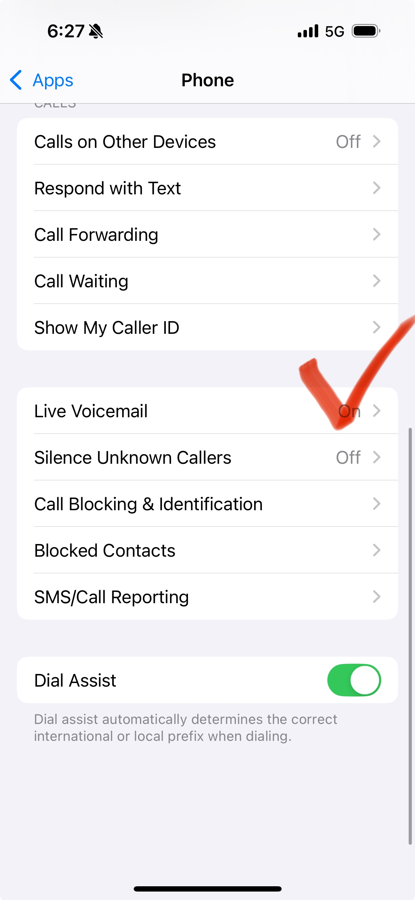

상대방이 전화를 걸면 고객의 아이폰으로 통화 수신시 22초만에 외국어로 된 음성 사서함이
송출되는 경우가 있음
이 경우 아이폰 영어버전 동작상태일때 증상 확인됨
한국어 설정일땐 보이지 않던 메뉴가 영어로 설정시
Phone(전화)=> Live Voicemail 메뉴가 식별되며 (on)상태 확인시 off로 변경 하면
60초 이후 전화 응답 수신 확인됩니다.
※아이폰 언어 설정 변경 : 설정 - 일반 - 언어 및 지역 (Settings - General - Language & Region)
메뉴 진입시 보이는 언어가 다수일경우 제일 위에 메뉴가 우선 임으로
언어 옆에 줄세개 버튼 길게 눌러 제일 위로 드래그 해주시면 됩니다.
